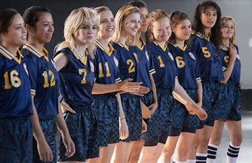

Season One
Overview
Yellowjackets Season 1 premiered on November 14, 2021, introducing audiences to a gripping blend of survival drama, psychological horror, and mystery. The show follows a 1996 high school girls' soccer team whose plane crashes in the Canadian wilderness, forcing them into a brutal fight for survival. Meanwhile, the present-day storyline explores how the survivors—now adults—are still haunted by their past.
Key Plot Points

- The Plane Crash: The Yellowjackets’ flight to a national tournament crashes deep in the wilderness, leaving them stranded with limited supplies and no rescue in sight.
- Survival & Power Struggles: The team begins to split into factions as tensions rise, especially between pragmatic leader Jackie, resourceful Shauna, and mystic Lottie.
- Lottie’s Rise: Lottie’s visions and eerie connection to the wilderness lead some to believe she has supernatural powers, gaining her followers.
- Jackie’s Fate: The season ends with a tragic turn when Jackie, isolated from the group, freezes to death in the snow.
- The Present-Day Mystery: Shauna, Tai, Misty, and Nat reconnect when they’re blackmailed by an unknown person who knows about their past. Nat also investigates Travis’s suspicious death, while Tai’s political campaign reveals a disturbing sleepwalking habit.
Themes & Symbolism
Season 1 of Yellowjackets explores themes of survival, trauma, and the descent into savagery, setting the foundation for the show’s psychological and supernatural elements. As the survivors struggle to stay alive in the wilderness, their moral boundaries begin to erode, hinting at the ritualistic cannibalism foreshadowed in the opening scene. Power struggles emerge, particularly between Jackie, Shauna, and Lottie, reflecting the shift from logic and reason to a more primal, instinct-driven existence. Meanwhile, in the present-day timeline, the adult characters grapple with PTSD, guilt, and buried secrets, proving that the past still has a hold on them. The show also plays with the idea of supernatural vs. psychological horror, leaving audiences questioning whether the eerie events in the wilderness are real or simply the result of stress, fear, and starvation-induced hallucinations. Lottie’s visions and growing influence suggest a higher power or force at play, but it remains unclear whether it is truly supernatural or just a manifestation of belief and desperation. Ultimately, Season 1 establishes a world where reality and illusion blur, forcing both the characters and the audience to question what is truly happening.
Cliffhangers
Season One sets the stage for a dark, gripping mystery-leading directly into the even wilder events of Season Two.
- The season ends with a shocking reveal: Lottie is alive in the present day, seemingly leading a cult.
- Tai’s dark side is exposed—her wife discovers a shrine with their dog’s severed head.
- Shauna’s secret affair turns deadly when she murders Adam, a man she thought was blackmailing them.